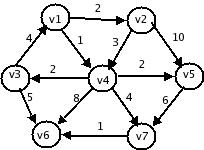

Shortest-Path Algorithm
The input is a weight graph. Associated with each edge (vi,vj) is a
cost Ci,j to traverse the arc.
The cost of a path v1,v2..........vn is
∑Ci,i+1.
This is referred to as the “weighted path lenght”.The unweighted path
length is merely the number of edges on the path,namely n-1.
Unweighted Shortest Paths:-
In unweighted graph g using some vertex s.Which is an input
parameter, we would like to find the shortest path from s to all other
vertices.We are only interested in the number of edges contained on the
path,so there are no weights on the edges.
Suppose we choose 's' to be v3.Immediately,we can tell that
the shortest path from s to v3 is then a path of length 0.We
can mark this information,obtaining the graph vertices v2 and
v4 having shortest path 2 from s. and finally vertices
v5 and v7 having shortest path 3 from s.
This strategy for searching a graph is known as breadth-first search.It
operates by processing vertices in layers:the vertices closest to the start
are evaluated first,and the most distant vertices are evaluated last.This
is much the same as a level-order traversal for trees.
For each vertex,we will keep track of 3 pieces of information.First,we
will keep its distance from 's' in the entry dv.Initially al vertices are
unreachable except for s,whose path lenght is 0.The entry in pv is the
bookkeeping variable,which will allow us to print the actual paths. The
entry 'known' is set to 1 after a vertex is processed.Initially,all entries
are unknown,includingthe start vertex.when a vertex is known,we have a
guarantee that no cheper path will ever be found,so processing for that
vertex is essentially complete.
Dijkstra'as Algorithm:-
This is for finding the shortest path between two nodes in a weighted
graph represented by a weight matrix.That implementation was
O(n2) ,where n is the number of nodes in the graph.
for (all nodes i)
{
distance[i]=INFINITY;
perm[i]=NONMEMBER;
}
perm[s]=MEMBER;
distance[s]=0;
current=s;
while(current!=t)
{
dc=distance[current];
for(all nodes i that are successors of current)
{
newdist=dc+weight[current][i];
if(newdist<distance[i])
{
distance[i]=newdist;precede[i]=current;
}
}
k=the node k such that perm[k]==NONMEMBER and such that distance[k]is
smallest;
current=k;
perm[k]=MEMBER;
}
*pd=distance[t];
At each stage Dijkstra's algorithm selects a vertex v,which has the
smallest dv among all the unknown vertices,and declares that
the shortest path from s to v is known. The remainder of a stage consists
of updating the values of dw.dw = dv+cv,w.

In the above graph G the initial configuration,assuming that the start
node s is v1.The selected is v1 wiht path length 0.
This vertex is marked known.Now that v1 is known,some entries
need to be adjusted.The verteces adjacent to v1 and
v4.
Next v4 is selcted and marked known.Vertices
v6,v7 are adjacent,and it turns out that all require
adjusting.
| v | Known | dv | pv |
|---|
| v1 | 1 | 0 | 0 |
| v2 | 0 | 2 | v1 |
| v3 | 0 | 3 | v4 |
| v4 | 1 | 1 | v1 |
| v5 | 0 | 3 | v4 |
| v6 | 0 | 9 | v4 |
| v7 | 0 | 5 | v4 |
After v4 is declared known
| v | Known | dv | pv |
|---|
| v1 | 1 | 0 | 0 |
| v2 | 1 | 2 | v1 |
| v3 | 0 | 3 | v4 |
| v4 | 1 | 1 | v1 |
| v5 | 0 | 3 | v4 |
| v6 | 0 | 9 | v4 |
| v7 | 0 | 5 | v4 |
After v2 is declared known
| v | Known | dv | pv |
|---|
| v1 | 1 | 0 | 0 |
| v2 | 1 | 2 | v1 |
| v3 | 1 | 3 | v4 |
| v4 | 1 | 1 | v1 |
| v5 | 1 | 3 | v4 |
| v6 | 0 | 8 | v3 |
| v7 | 0 | 5 | v4 |
After v5 is declared known
| v | Known | dv | pv |
|---|
| v1 | 1 | 0 | 0 |
| v2 | 1 | 2 | v1 |
| v3 | 1 | 3 | v4 |
| v4 | 1 | 1 | v1 |
| v5 | 1 | 3 | v4 |
| v6 | 0 | 6 | v7 |
| v7 | 1 | 5 | v4 |
After v7 is declared known
| v | Known | dv | pv |
|---|
| v1 | 1 | 0 | 0 |
| v2 | 1 | 2 | v1 |
| v3 | 1 | 3 | v4 |
| v4 | 1 | 1 | v1 |
| v5 | 1 | 3 | v4 |
| v6 | 1 | 6 | v7 |
| v7 | 1 | 5 | v4 |
After v6 is declared known and algorithm terminates
Back
Back To Main
|